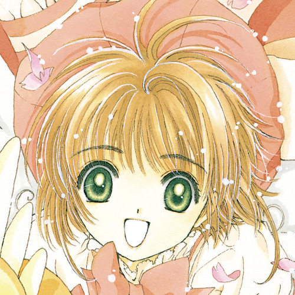
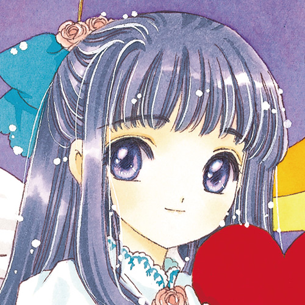
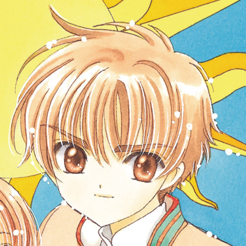
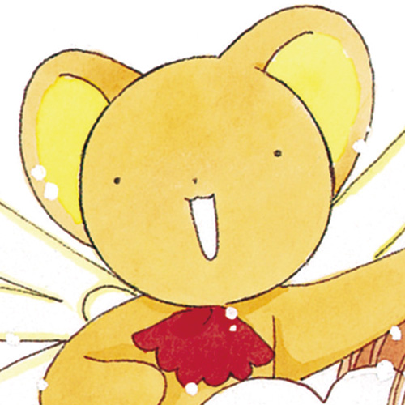
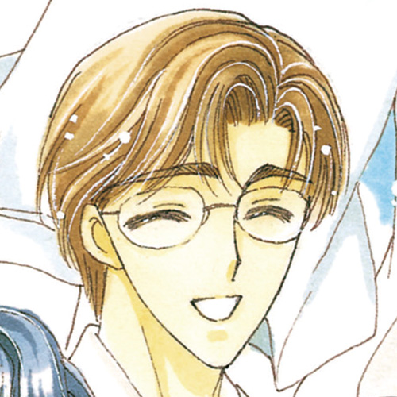
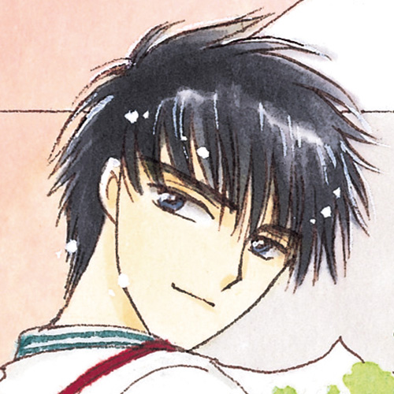
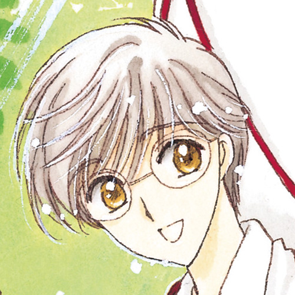

INTRODUCTION介绍
情节概要
木之本樱是友枝小学的四年级学生。 和父亲、哥哥住在一起。 一天，小樱在父亲的图书馆里发现了一本奇怪的书。 书里的“库洛卡”给世界带来了灾难！ 为了收集释放到世界各地的库洛卡，小樱决定作为“魔法使”奋力拼搏...！
主要人物介绍

木之本 樱
4月1日出生、A型。喜欢的科目是音乐和体育、讨厌的科目是数学。 是充满活力的女孩子！ 在封印兽可鲁贝洛斯的指导下、小樱决定成为魔法使。

大道寺 知世
9月3日出生、A型。非常喜欢小樱、小樱寻找卡牌所穿的服装都是由知世制作。非常喜欢拍摄小樱收集卡牌时的视频！

李 小狼
7月13日出生、O型。是从香港来的转校生。魔法使库洛里德的远亲。使用罗盘来收集卡牌、是小樱的对手。

可鲁贝洛斯
保护魔法书的封印兽。由于魔力不足、变成了毛绒玩具的样子。用大阪腔说话、喜欢甜食！

木之本 藤隆
1月3日出生。小樱的父亲。性格温和、是一所大学的讲师。实际上在木之本家是最有运动神经的人。

木之本 桃矢
2月29日出生、O型。比小樱大七岁的、小樱的哥哥。对妹妹态度不好、但实际上很关心小樱。

月城 雪兔
12月25日出生、AB型。是哥哥最好的朋友、性格温柔可爱、对小樱很好。食量非常大！